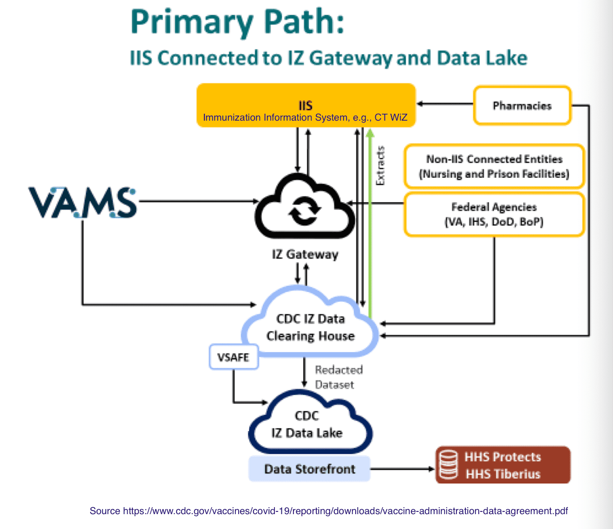

This post will explore why CDC and CT Department of Public Health (CT
DPH) are reporting different COVID-19 vaccination counts for
Connecticut. The goal is to understand how the data makes its way into
the CDC and Connecticut summaries.
Below is a direct comparison of vaccination data for Connecticut
reported by the CDC and the tallies from the Connecticut Department of
Public
Health
county by county as of 26-Apr-2022. The column on the right shows how
many more vaccinations are reported by the CDC than by CT DPH. Note that
CDC reports 15%
more individuals with some vaccination, including
57%
more who have received only the initial dose.
|
Reported by CDC |
Reported by CT |
% CDC vs CT DPH |
| Initial dose only |
582,605 |
253,258 |
+57% |
| Two doses |
1,365,719 |
1,169,111 |
+14% |
| With booster |
1,454,017 |
1,471,384 |
−1% |
| Total |
3,402,341 |
2,893,753 |
+15% |
| CDC data as of 26-Apr-2022, CT DPH data as of 20-Apr-2022 |
| An initial J&J dose is counted in the 'two doses' column rather than in the 'initial dose' column. |
| Total population for Connecticut as of 2020 census was 3,605,944. |
Until recently “fully vaccinated” referred to individuals with two doses
of Pfizer or Moderna or one dose of J&J. In this post we will refer to
those people as “two doses” even if they have had only one dose of J&J.
Why does CDC report more individuals as first dose only?
State-wide and county by county the pattern is that CDC reports more
people vaccinated with at least one dose and more people who have
received only the first dose. This pattern has been observed in other
states. There are a number of attempts to go into the details of CDC
versus state counts for particular states. See this analysis of county
level counts in
Wisconsin
and also comments by Washington State on differences between their
counts and
CDC.
Early in December 2021, Kaiser Health News
questioned
why some senior vaccination rates seemed so high and also noted
increases in the number of individuals reporting only a first dose.
Later in December the CDC added a significant footnote to their vaccine
tracking page that gives a discussion of why it may be hard for them to
track different doses of COVID
vaccines
at the national level. That’s especially true for boosters because there
is a long interval after the second dose and a booster is more likely to
have been given by a different provider or in a different location. The
de-identified data that CDC analysts work with does not include the
identifier that may be in use at the state level.
To protect the privacy of vaccine recipients, CDC receives data
without any personally identifiable information (de-identified data)
about vaccine doses. Each jurisdiction or provider uses a unique
person identifier to link records within their own systems. However,
CDC cannot use the unique person identifier to identify individual
people by name.
There are challenges in linking doses when someone is vaccinated in
different jurisdictions or from different providers. Even with the
high-quality data CDC receives from jurisdictions and federal
entities, there are limits to how CDC can analyze those data. If a
person received doses in more than one jurisdiction or from different
providers within the same jurisdiction, they could receive different
unique person identifiers for different doses. CDC may not be able to
link multiple unique person identifiers for different jurisdictions or
providers to a single person.
For example, most people receive their first and second dose of a
2-dose vaccine from the same provider because those doses are given
within just a few weeks of each other. As they receive their booster
dose months later, it’s possible they will go to a new location for
that dose. The person may have moved or the provider who gave them
their initial doses may no longer offer vaccination. This often
happens for people who went to mass vaccination clinics that have
since closed. In such a scenario, the person’s booster dose may appear
to be their first dose when reported. This is just one example of how
CDC’s data may over-estimate first doses and under-estimate booster
doses
In December 2021 there were a number of articles that discussed issues
with the quality of the CDC vaccination tabulations (for example, Matt
Yglesias).
Where does vaccination data come from?
To try to understand possible weakness in how CDC distinguishes among
first dose, second dose, and boosters, it’s necessary to examine the
details of how the data gets to the CDC. This will underscore some
limits in the reports at the state level as well.
Both the CDC and CT DPH have made a real effort to be transparent about
their reports. There’s quite a bit of information available on the Web
describing how they are tabulating vaccinations.
Connecticut DPH is reporting vaccination tabulations based on CT
WiZ, the
Connecticut immunization information system. CDC gets data from CT DPH,
but they also get data from other state immunization information systems
which may include some Connecticut residents plus they also get
vaccinations done by federal entities that are not reported to CT WiZ.
There are several issues.
The major reason that the CT DPH counts are lower overall is that DPH
does not have data on all vaccinations by “federal sources” such as the
VA or DOD.
Doses administered by some Federal entities (including Department of
Defense, Department of Correction, Department of Veteran’s Affairs,
Indian Health Service) are not yet reported to CT WiZ.
How comprehensive is the information for Connecticut? All vaccine
providers who participate in the COVID-19 vaccination program are
required to report vaccinations to CT WiZ within 24
hours.
For example, I received my first two doses from a clinic operated by
Yale New Haven Hospital. My booster dose came from Walgreens. When I
looked up my vaccination record in CT WiZ I was pleased to see that all
three doses were recorded (as were my flu shots for 2020 and 2021). I
receive my primary care through a system that uses the Yale New Haven
Hospital electronic health record, but in that system my third and
fourth doses of COVID vaccination are not recorded. (I’ll have to
communicated that to them separately.) When I got my second booster from
Walgreens, the record was available through CT WiZ within a couple of
days.
The Plan to Track Immunizations
Internet searching of the CDC web site turns up a lot of information
about how CDC tracks COVID vaccinations, but almost all of it refers to
planning done during late 2020 in preparation for the roll out of
vaccines. CDC has a web
page
with an overview of the planned IT systems for tracking vaccinations and
an elaborate chart that describe the plan for data flows.
Keep in mind that this chart and other planning documents represent a
goal and cannot be taken as a description of what is actually
happening.

The CDC vaccine information architecture depends on 64 Immunization
Information Systems (IIS), which are mostly state based. The concept of
immunization information systems was developed before COVID and was
primarily aimed at childhood immunizations (but always covered other
immunizations as well, which is why I can see many of my non-COVID
vaccinations in CT WiZ).
The plan describes a lot of detail about the legal process. It discusses
the need for separate explicit legal
agreements
for how data goes from federal providers (such as DOD) to the state (via
its IIS).
In the Connect component of the IZ Gateway, will participating IISs
receive data (push) from VAMS and other non-traditional vaccination
providers (e.g., DOD) who administered vaccinations within the IIS’s
jurisdiction?
Yes, in the Connect component of IZ Gateway, participating IISs will
receive data from VAMS for patients in their jurisdictions.
Participating IISs will also receive data for patients in their
jurisdictions from non-traditional vaccination providers that are
onboarded to IZ Gateway Connect and not already connected to IISs.
How does provider-initiated multijurisdictional data exchange work?
The Provider-Initiated Multijurisdictional Data Exchange component of
IZ Gateway allows providers to initiate a query for immunization
information from multiple jurisdictions.
The theory is that the IZ
Gateway
is a central hub through which data can move back and forth among the
various state-based IIS’s. The IZ Gateway appears to be the
responsibility of the Office of the Chief Technology
Officer at HHS, although the
pointer to the IZ Gateway on that page contains only a broken link.
There is a
flyer
on the HHS site that seems to describe the idea of the gateway
pre-COVID.
HHS’ Immunization
Gateway,
meanwhile, which was launched in 2013 to boost consumer access to
immunization records and enable more informed patient decisions, has
helped improve population health by breaking down silos and filling in
critical missing pieces. [from a pre-COVID press
report]
It appears that the IZ Gateway is operated by the Association of Public
Health Laboratories (APHL), presumably under a
contract from HHS. Unfortunately the APHL web site offers no information
about the gateway.
What is actually happening with the gateway? My impression is that for
the most part agreements have not been made to exchange this data across
states and that data mostly goes one-way from the state IIS to the
central IZ Gateway. As a result, states IIS’s do not learn about out of
state vaccinations of their residents. Vaccinations by federal agencies
are recorded via VAMS. That goes into to the IZ Gateway but does not
seem to be passed on to the state IIS’s. The planning diagram has lots
of multi-way arrows, but in practice the arrows seem to go one-way into
the IZ Gateway and dead end there. That limits the comprehensiveness of
the reporting done by state agencies such as the CT Department of Public
Health. While the IZ Gateway was conceived before COVID, the pandemic
increased the urgency. An article “How the US plans to track Covid-19
vaccine
doses”
describes some of the atmosphere in December 2020 just as vaccines were
about to be rolled out. It may just take time for the IZ Gateway to
reach its original conception.
In summary, the two big problems for Connecticut state reporting are
that they do not have complete information about vaccinations performed
by federal entities (notably the VA and DOD) and they do not learn about
shots given to Connecticut residents while in other states. Also, within
Connecticut, college students may be counted in the denominator of the
town where live while at college but may be in the numerator according
to the town they listed as residence when we they got a shot.

Issues with CDC COVID Vaccination Data
It appears that the major problem for the CDC summary tabulations is
that they do not have access to all the identifying information that is
reported in from the state IIS’s. That makes it hard to identify whether
a particular shot is a first shot or a follow-on shot. And note that
this will become even more of an issue as we get into “second booster”
shots and as time since last booster becomes a larger factor in
characterizing whether an individual is fully vaccinated. Being able to
do a tabulation based on each individual’s separate vaccination history
has become crucial.
Another issue for the CDC is whether they are getting complete
information from an IIS in each state. I have focused on Connecticut,
and I’m confident that Connecticut is not a problem for the CDC. Based
on some superficial reading, I gather that there are some states that do
not feed complete information into the IZ Gateway and therefore the CDC
would have a less complete view of vaccinations in those states.
Refer to the diagram above describing the planned system architecture.
There is an HHS Privacy
Assessment
that describes in detail the data that goes from state IIS’s into the
central system. This includes information that identifies individuals
such as name, date of birth, and contact information. Note that the
privacy assessment refers to the “Data Lake.” There’s exists a central
national database that contains individually identified inoculation
data. But that is not the database used by CDC analysts to tabulate that
vaccination rates by state and county. Before tabulation, there is an
additional step that creates another database with most individual
identifying information redacted.
For what primary purpose is the PII [personally identifiable
information] used?
Patient name, email address, phone number, medical notes, date of
birth, mailing address, emergency contact name, emergency contact
phone number, gender, race, medical history are used for patient
record identification within the system.
Describe the secondary uses for which the PII will be used.
Patient social and geographic demographics are used to identify and
follow-up with patients who have been vaccinated as well as any who
may experience adverse reactions stemming from immunizations. Patient
PII may also be used for determining efficacy of the impact of the
vaccine on other preventable diseases by comparing immunization rates
to disease case data.
Clinic contact information is used to contact facilities who may need
or have available vaccine for dispensing.
Identify legal authorities governing information use and disclosure
specific to the system and program.
Public Health Service Act, section 301, “Research and Investigation,”
(42 U.S.C. 241); sections 304, 306 and 308(d) which discuss authority
to grant assurances of confidentiality for health research and related
activities (42 U.S.C. 242 b, k, and m(d)). Public Readiness and
Emergency Preparedness Act (42 U.S.C. 247d-6d).
Are records on the system retrieved by one or more PII data
elements?
Yes
Identify the number and title of the Privacy Act System of Records
Notice (SORN) that is being use to cover the system or identify if a
SORN is being developed.
09-90-2001, Records Used for Surveillance and Study of Epidemics,
Preventable Diseases 09-20-0136, Epidemiological Studies and
Surveillance of Disease Problems
Note that the authority cited
(09-90-2001)
was written in the summer of 2020 specifically to respond to the COVID
epidemic. A New York Times
article
from December 2020 describes concerns and suspicion about why the
federal government was asking for individual identifying information for
the IZ Gateway.
Issues That Affect Both CDC and State Vaccination Rates
A major issue for vaccination rates by geographic area is that the
residence reported at the time of vaccination may not be the same
residence reported to the Census tabulations which drives the
denominator of the rate calculation. College students, “snowbird”
retirees who spend part of the year in different states, or migrant
workers may not be counted consistently in the numerator and the
denominator. When someone gets a vaccination they are most likely to
give their location at the time of the vaccination as their residence.
That may not be the same place the individual is counted in the 2020
census.
For example, the town of Mansfield is the home of the University of
Connecticut. It has the lowest reported vaccination rate of any town in
Connecticut. In the Census, students who live on campus are counted as
residents of Mansfield and are in the denominator of the rate
calculation. At the time they were vaccinated many of those students may
have reported their home address as the address where they live with
their families when school is not in session. Younger populations are
less likely to be vaccinated, but a large part of what produces the
reported low vaccination rate in Mansfield is that “home address” in the
vaccination data often does not match where the student was counted by
the Census Bureau.
Comparison with Polling Data
There are many opinion polls that ask about COVID vaccination.
Unfortunately polling questions often do not distinguish among first
dose, second dose, and booster dose. Pew has published a
report
that compares many public opinion polls with CDC reports. The report
focus on the percentage of adults who have received at least one dose so
it does not evaluate question of whether subsequent doses are being
accurately reported. In general it shows that polls closely track CDC
data so that’s reassuring. The report only goes up through June 2021
which means it stopped before booster shots became an option.
General Issues with Tracking COVID Data
There have been significant issues surrounding data quality throughout
the COVID pandemic. In 2020 the COVID Tracking
Project emerged from multiple efforts to try
to obtain comparable statistics about the path of the epidemic in the
United States. It was a volunteer effort and suspended operation in
March 2021 at a point when they felt the data could be obtained from
federal
sources.
In January 2022 Bob Wachter did an interview with Eric Topol that
reviewed the state of pandemic at that moment. Near the end of the
interview, there’s an interesting section where BW asks about why the US
seems to need to rely on data from other countries. Here is a transcript
of that portion of the interview (which starts at 48:03 on the YouTube
video):
The Omicron Whirlwind: A Conversation with Eric Topol about the Current
and Future State of the Pandemic January 13, 2022 Bob Wachter
interviewing Eric Topol Bob Wachter is Chair, UCSF Department of
Medicine. Eric Topol is a cardiologist and founder and director of the
Scripps Research Institute
BW: That’s a good pivot to something you were beginning to talk about
but I sort of moved it along, but let’s get back to it. Up until two
years ago, you’d see a paper in a journal and it was from UK or from
Israel or from South Africa, you’d say, ‘Oh, that’s not America. I’m
waiting for the study.’ Whereas for the last two years, it seems like
almost all of the insights, or many of them, come from studies from
other countries. They have better data systems, they are investing
more in clinical research. What’s going on and what do we need to do
to be leaders in this area? Because it really feels like we’re
followers.
ET: We are followers. And we have pathetic data systems. I mean,
pathetic. And the one thing that really strikes me, Bob, is that we of
course support the current administration and the fact that the mantra
sticking to the science. But there has been all these announcements
from day one of taking on administration through today, there has not
been one mention of improving our data system. Not a mention. And this
is just preposterous. Yes, we are forced to rely on other country’s
data, but when these advisory committees for FDA and CDC convene, they
basically are unwilling to accept that data even though there’s not
data here in this country, because, like for example, right now we
want to know whether these Omicron boosters, how well they’re working
to prevent hospitalizations and deaths. And when do they wane? When
does their protection wane? Those people who are getting hospitalized
who had a third shot, what’s going on there? We were promised by the
CDC in May that they would track every breakthrough hospitalization
and death. Never happened. And so we don’t have critical data. We have
150,000-plus people in the hospital. And I have begged at the HHS
level that we have granular data on each of those people. Their
vaccination status, which vaccine, when they got it, their age, their
co-existing conditions, and all the basal stuff, right? And they say,
“Well, we’re gonna look into it.” Even though it can be mandated by
HHS authority. So we have just a dreadful situation here where we
don’t have real-time capture of data. The only data that gets posted
on the CDC is a month old, and it’s de minimus about things like
hospitalizations or deaths, and this is unacceptable. If you’re gonna
go in a pandemic and try to deliver and guidance, you have to have
data. That’s how you develop trust. That’s how you have the best
navigation system. And we don’t have it. But the most important thing
to me, Bob, is there’s no seeming will to get one. And that is
distressing and it has to change.
BW: Why do you think that is?
ET: Well, the main thing to me is that we have a Secretary of HHS, who
came from California, the attorney general, he hasn’t shown up for the
pandemic. Have you seen him? Have you seen him make a statement?
BW: I saw him talking about how the CDC director doesn’t have a degree
in marketing the other day. That was interesting.
ET: I see, I see, Yeah we have a serious problem. HHS, there’s been a
lot of infighting between the agencies. And the HHS secretary should
be bringing that together. And so we have a serious problem is we have
a no-show HHS secretary. We have an HHS that could mandate this data
capture, but they’re afraid, in my view, of political backlash. That’s
why they’re not doing it. And you just can’t. Yeah, we’re a big
country, but yo know what, a big country without data is in a horrible
situation. So we have to rely on other countries. And fortunately we
have amazing data that comes out of places like the UK and Israel and
Denmark and South Africa. So many that has been terrific for us. But
it’s amazing we have a different population here, we’re much less
vaccinated, much less boosted, we have lots of co-existing conditions
that are not as prevalent in some of these other countries, and yet we
don’t have data. I don’t know. I mean, I just don’t think that the
administration has delivered to sticking to the science because part
of the science is having the data.
BW: Yeah, that makes sense.
{{% youtube "lCAvFHd3B38?start=2883" %}}
John Burn-Murdoch sites an example where better monitoring in the UK
provides information relevant to interpreting COVID trends in the US
because of a random sample survey of prevalence of
COVID
in the UK.
Once again, we should really be immensely grateful to the team at
@ONS, whose random sample survey providing
regular and representative estimates of prevalence is truly
world-leading, and the absolute gold standard in pandemic
surveillance.”
{{% tweet "1483062311971704833" %}}
Would better data tracking have made a difference in fighting the
pandemic in the US? Perhaps not. But individuals and local governments
have been struggling to figure out best practices while the facts are
uncertain and knowledge is still being developed.
County Level Data for Connecticut
Below are comparisons of county-level data from the CDC to DPH, first
with a table and then displayed via a bar chart.
| county |
initial dose only
|
second dose
|
booster dose
|
| CDC initial
dose only |
CT initial
dose only |
CDC / CT DPH
dif |
CDC second
dose |
CT second
dose |
CDC / CT DPH
dif |
CDC booster |
CT DPH booster |
CDC / CT DPH
dif |
| Litchfield |
21,192 |
10,447 |
+51% |
62,643 |
56,672 |
+10% |
73,844 |
76,495 |
−4% |
| Hartford |
106,517 |
55,920 |
+48% |
315,363 |
284,609 |
+10% |
361,260 |
374,569 |
−4% |
| Tolland |
14,363 |
7,411 |
+48% |
41,868 |
39,820 |
+5% |
59,147 |
61,368 |
−4% |
| Windham |
11,586 |
6,446 |
+44% |
37,632 |
33,832 |
+10% |
37,282 |
37,917 |
−2% |
| Fairfield |
191,698 |
87,206 |
+55% |
400,308 |
342,184 |
+15% |
370,044 |
382,958 |
−3% |
| New Haven |
148,310 |
58,198 |
+61% |
326,443 |
275,259 |
+16% |
338,991 |
344,188 |
−2% |
| Middlesex |
21,675 |
8,925 |
+59% |
57,390 |
48,478 |
+16% |
78,160 |
81,260 |
−4% |
| New London |
37,029 |
16,254 |
+56% |
103,443 |
80,529 |
+22% |
107,174 |
109,149 |
−2% |
| Address pending |
30,235 |
2,451 |
+92% |
20,629 |
7,728 |
+63% |
28,115 |
3,480 |
+88% |
| Total |
582,605 |
253,258 |
+57% |
1,365,719 |
1,169,111 |
+14% |
1,454,017 |
1,471,384 |
−1% |
| CDC data as of 26-Apr-2022, CT DPH data as of 20-Apr-2022 |
| An initial J&J dose is counted in the `second dose` column rather than in the `initial dose` column. |
| Total population for Connecticut as of 2020 census was 3,605,944. |
Below is a visual summary of the same vaccination counts reported in the
table. The brown bars show vaccinations reported by CDC and the green
bars show Connecticut Department of Health. The figure includes a data
point to show the total population of each county according to the 2020
Census.